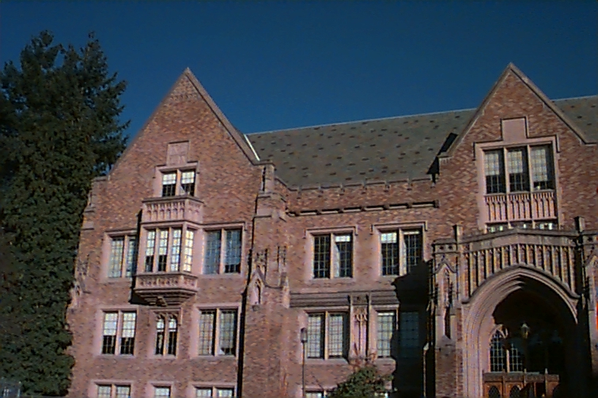
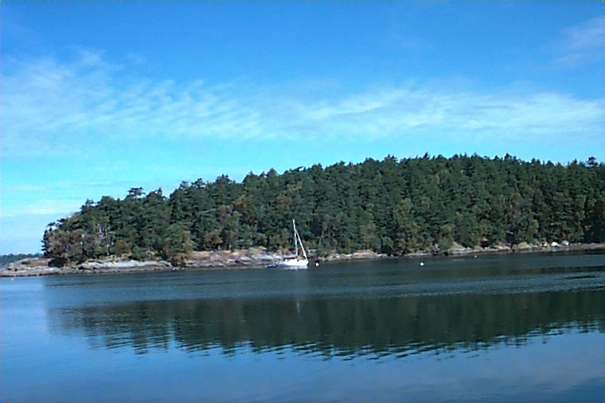

image id: 783 distance: 0.0
image id: 785 distance: 12499.665835533364
image id: 784 distance: 25310.239271883624
image id: 229 distance: 51741.7925278976
image id: 783 distance: 0.0
image id: 785 distance: 0.05047975980515662
image id: 784 distance: 0.15139991181657853
image id: 229 distance: 0.3070331527672797
image id: 783 distance: 0.0
image id: 785 distance: 4489.813855416461
image id: 784 distance: 22055.691983344834
image id: 229 distance: 33291.934977270284
image id: 783 distance: 0.0
image id: 785 distance: 8861.543770698196
image id: 784 distance: 40094.2945816484
image id: 229 distance: 49616.185685721546
image id: 783 distance: 0.0
image id: 785 distance: 0.044852817670277934
image id: 784 distance: 0.18990404803896865
image id: 229 distance: 0.30762891576383644
image id: 783 distance: 0.0
image id: 179 distance: 5.0
image id: 649 distance: 6.0
image id: 9 distance: 9.0